항공산업기사 (2014-05-25 기출문제)
1과목: 항공역학
1. 다음 중 마하 트리머 (Mach trimmer)로 수정할 수 있는 주된 현상은 ?
- 더치롤 (Duch roll)
- 턱 언더 (Tuck under)
- 나선 불안정 (Spiral divergence)
- 방향 불안정 (Directional divergence)
(정답률: 77%)

2. 양항비가 10인 항공기가 고도 2000m 에서 활공시 도달하는 도달하는 활공거리는 몇 m인가 ?
- 10000
- 15000
- 20000
- 40000
(정답률: 95%)
3. 층류와 난류에 대한 설명으로 설명으로 틀린 것은 ?
- 난류는 층류에 비해 마찰력이 크다 .
- 난류는 층류보다 박리가 쉽게 일어난다 .
- 층류에서 난류로 변하는 현상을 현상을 천이라 한다 .
- 층류에서는 인접하는 유체층 사이에 유체입자의 혼합이 없고 난류에서는 혼합이 있다 .
(정답률: 73%)
4. 고정 날개 항공기의 자전운동 자전운동 (Auto rotation)이 발생할 수 있는 조건은 ?
- 낮은 받음각 상태
- 실속 받음각 이전 상태
- 최대 받음각 상태
- 실속 받음각 이후 상태
(정답률: 77%)
5. 다음 중 항공기의 가로안정성을 높이는데 일반적으로 가장 기여도가 높은 것은?
- 수직꼬리날개
- 주 날개의 상반각
- 수평꼬리날개
- 주 날개의 후퇴각
(정답률: 59%)
6. 다음 중 테이퍼형 날개(taper wing)의 실속특성으로 옳은 것은?
- 날개 끝에서부터 실속이 일어난다.
- 날개 뿌리에서부터 실속이 일어난다.
- 초음속에서 와류의 형태로 실속이 감소한다.
- 스팬(span)방향으로 균일하게 실속이 발생한다.
(정답률: 66%)
7. 무게가 1500kg인 비행기가 30°경사각, 100km/h의 속도로 정상선회를 하고 있을 때 선회반경은 약 몇 m인가?
- 13.6
- 136.4
- 1364
- 1500
(정답률: 76%)
8. 비행기가 수평 비행시 최소 속도를 나타내는 식으로 옳은 것은? (단, W : 비행기 무게, ρ : 밀도, S : 기준면적, CLMAX : 최대양력계수이다.)
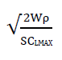
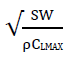
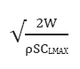
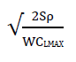
(정답률: 85%)
9. 헬리콥터를 전진비행 또는 원하는 방향으로의 비행을 위해 회전면을 기울여 주는 조종장치는?
- 페달
- 콜렉티브 조종레버
- 피치 암
- 사이클릭 조종레버
(정답률: 74%)
10. 레이놀즈수(Reynolds Number)에 대한 설명으로 틀린 것은?
- 단위는 cm2/s 이다.
- 동점성계수에 반비례한다.
- 관성력과 점성력의 비를 표시한다.
- 임계레이놀즈수에서 천이현상이 일어난다.
(정답률: 84%)
11. 헬리콥터가 자전강하(Auto-Rotation)를 하는 경우로 가장 적합한 것은?
- 무동력 상승비행
- 동력 상승비행
- 무동력 하강비행
- 동력 하강비행
(정답률: 89%)
12. 밀도가 0.1kg·s2/m4인 대기를 120m/s의 속도로 비행할 때 동압은 몇 kg/m2인가?
- 520
- 720
- 1020
- 1220
(정답률: 78%)
13. 이륙중량이 1500kg, 기관출력이 250HP인 비행기가 해면고도를 80%의 출력으로 180km/h로 순항비행할 때 양항비는?
- 5.0
- 5.25
- 6.0
- 6.25
(정답률: 39%)
14. 비행기의 방향 조종에서 방향키 부유각(Float angle)에 대한 설명으로 옳은 것은?
- 방향키를 밀었을 때 공기력에 의해 방향키가 변위되는 각
- 방향키를 당겼을 때 공기력에 의해 방향키가 변위되는 각
- 방향키를 고정했을 때 공기력에 의해 방향키가 변위되는 각
- 방향키를 자유로 했을 때 공기력에 의해 방향키가 자유로이 변위되는 각
(정답률: 85%)
15. 프로펠러의 회전수가 3000rpm, 지름이 6ft, 제동마력이 400HP일 때 해발고도에서의 동력계수는 약 얼마인가? (단, 해발고도에서 공기밀도는 0.002378slug/ft3이다.)
- 0.015
- 0.035
- 0.065
- 0.095
(정답률: 29%)
16. 프로펠러 항공기의 항속거리를 최대로 하기 위한 조건으로 옳은 것은? (단, CDp는 유해항력계수, CDi는 유도항력계수이다.)
- CDp = CDi
- CDp = 2CDi
- CDp = 3CDi
- 3CDp = CDi
(정답률: 77%)
17. 다음 중 프로펠러 효율에 대한 설명으로 옳은 것은?
- 축동력에 비례한다.
- 회전력계수에 비례한다.
- 진행율에 비례한다.
- 추력계수에 반비례한다.
(정답률: 72%)
18. 항공기에 장착된 도살핀(Dorsal fin)이 손상되었을 때 발생되는 현상은?
- 방향 안정성 증가
- 동적 세로 안정 감소
- 방향 안정성 감소
- 정적 세로 안정 증가
(정답률: 85%)
19. 다음 중 뒤젖힘 날개의 가장 큰 장점은?
- 임계마하수를 증가시킨다.
- 익단 실속을 막을 수 있다.
- 유도항력을 무시할 수 있다.
- 구조적 안전으로 초음속기에 적합하다.
(정답률: 67%)
20. 유도항력계수에 대한 설명으로 옳은 것은?
- 유도항력계수와 유도항력은 반비례한다.
- 유도항력계수는 비행기무게에 반비례한다.
- 유도항력계수는 양력의 제곱에 반비례한다.
- 날개의 가로세로비가 크면 유도항력계수는 작다.
(정답률: 71%)
2과목: 항공기관
21. 속도 1080km/h로 비행하는 항공기에 장착된 터보제트 기관이 294kg/s로 공기를 흡입하여 400m/s로 배기시킬 때 비추력은 약 얼마인가?
- 8.2
- 10.2
- 12.2
- 14.2
(정답률: 65%)
22. 그림과 같은 브레이튼(Brayton) 사이클의 P-V선도에 대한 설명으로 옳은 것은?
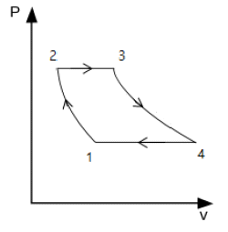
- 1-2 과정 중 온도는 일정하다.
- 2-3 과정 중 온도는 일정하다.
- 3-4 과정 중 엔트로피는 일정하다.
- 4-1 과정 중 엔트로피는 일정하다.
(정답률: 59%)
23. 가스터빈기관의 연료계통에서 연료필터(또는 연료여과기)는 일반적으로 어느 곳에 위치하는가?
- 항공기 연료탱크 위에 위치한다.
- 기관연료펌프의 앞뒤에 위치한다.
- 기관연료계통의 가장 낮은 곳에 위치한다.
- 항공기 연료계통에서 화염원과 먼 곳에 위치한다.
(정답률: 67%)
24. 다음 중 비가역 과정에서의 엔트로피 증가 및 에너지 전달의 방향성에 대한 이론을 확립한 법칙은?
- 열역학 제0법칙
- 열역학 제1법칙
- 열역학 제2법칙
- 열역학 제3법칙
(정답률: 81%)
25. 대형 터보팬기관에서 역추력 장치를 작동시키는 방법은?
- 플랩 작동시 함께 작동한다.
- 항공기의 자중에 따라 고정된다.
- 제동장치가 작동될 때 함께 작동한다.
- 스로틀 또는 파워레버에 의해서 작동한다.
(정답률: 76%)
26. 왕복기관의 고압 마그네토(Magneto)에 대한 설명으로 틀린 것은?
- 전기누설 가능성이 많은 고공용 항공기에 적합하다.
- 콘덴서는 브레이커 포인트와 병렬로 연결되어 있다.
- 마그네토의 자기회로는 회전영구자석, 폴슈(Pole shoe) 및 철심으로 구성되었다.
- 1차 회로는 브레이커 포인트가 붙어있을 때에만 폐회로를 형성한다.
(정답률: 74%)
27. 왕복기관에서 실린더의 압축비로 옳은 것은? (단, VC : 간극체적(Clearance volume), VS : 행정체적이다.)
- VS / VC
- VC+VS / VS
- VC / VS
- VS+VC / VC
(정답률: 52%)
28. 초음속 항공기의 기관에 사용하는 배기 노즐로 초음속 제트를 효율적으로 얻기 위한 노즐은?
- 수축노즐
- 확산노즐
- 수축확산노즐
- 동축노즐
(정답률: 83%)
29. 터빈 깃의 냉각방법 중 깃 내부를 중공으로 하여 차가운 공기가 터빈 깃을 통하여 스며 나오게 함으로서 터빈 깃을 냉각시키는 것은?
- 대류 냉각
- 충돌 냉각
- 공기막 냉각
- 증발 냉각
(정답률: 76%)
30. 항공기 왕복기관 연료의 안티노크(Anti-knock)제로 가장 많이 사용되는 것은?
- 벤젠
- 4에틸납
- 톨루엔
- 메틸알코올
(정답률: 80%)
31. 다음 중 왕복기관에서 순환하는 오일에 열을 가하는 요인 중 가장 작은 영향을 주는 것은?
- 커넥팅로드 베어링
- 연료펌프
- 피스톤과 실린더벽
- 로커암 베어링
(정답률: 69%)
32. 왕복기관의 작동여부에 따른 흡입 매니폴드(Intake manifold)의 압력계가 나타내는 압력을 옳게 설명한 것은?
- 기관 정지시 대기압과 같은 값, 작동하면 대기압보다 낮은 값을 나타낸다.
- 기관 정지시 대기압보다 낮은 값, 작동하면 대기압보다 높은 값을 나타낸다.
- 기관 정지시나 작동시 대기압보다 항상 낮은 값을 나타낸다.
- 기관 정지시나 작동시 대기압보다 항상 높은 값을 나타낸다.
(정답률: 69%)
33. 가스터빈기관의 정상 시동시에 일반적인 시동절차로 옳은 것은?
- Starter “ON” → Ignition “ON” → Fuel “ON” → Ignition “OFF” → Starter “Cut-OFF”
- Starter “ON” → Fuel “ON” → Ignition “ON” → Ignition “OFF” → Starter “Cut-OFF”
- Starter “ON” → Ignition “ON” → Fuel “ON” → Starter “Cut-OFF” → Ignition “OFF”
- Starter “ON” → Fuel “ON” → Ignition “ON” → Starter “Cut-OFF” → Ignition “OFF”
(정답률: 61%)
34. 가스터빈기관에서 연료/오일 냉각기의 목적에 대한 설명으로 옳은 것은?
- 연료와 오일을 함께 냉각한다.
- 연료는 가열하고 오일은 냉각한다.
- 연료는 냉각하고 오일속의 이물질을 가려낸다.
- 연료속의 이물질을 가려내고 오일은 냉각한다.
(정답률: 75%)
35. 다음 중 프로펠러를 회전시켜 추진력을 얻는 가스터빈기관은?
- 램제트기관
- 펄스제트기관
- 터보제트기관
- 터보프롭기관
(정답률: 90%)
36. 다음 중 항공기 왕복기관에서 일반적으로 가장 큰 값을 갖는 것은?
- 마찰마력
- 제동마력
- 지시마력
- 모두같다
(정답률: 77%)
37. 정속 프로펠러에서 파일롯 밸브(Pilot valve)를 작동시키는 힘을 발생시키는 것은?
- 프로펠러 감속기어
- 조속펌프 유압
- 엔진오일 유압
- 플라이 웨이트
(정답률: 83%)
38. 왕복기관의 지시마력을 구하는 방법은?
- 동력계로 측정한다.
- 마찰마력으로 구한다.
- 지시선도(Indicator diagram)를 이용한다.
- 프로니 브레이크(Prony brake)를 이용한다.
(정답률: 78%)
39. 항공기 왕복기관을 작동 후 검사하여 보니 오일 소모가 많고 점화플러그가 더러워졌다면 그 원인이 아닌 것은?
- 점화플러그 장착 불량
- 실린더 벽의 마모 증가
- 피스톤링의 마모 증가
- 밸브가이드의 마모 증가
(정답률: 63%)
40. 프로펠러 깃의 스테이션 넘버(Station number)에 대한 설명으로 옳은 것은?
- 프로펠러 전연에서 후연으로 갈수록 감소한다.
- 프로펠러 허브에서 팁(Tip)으로 갈수록 감소한다.
- 프로펠러 전연(Leading edge)에서 후연(Trailing edge)으로 갈수록 증가한다.
- 프로펠러 허브(Hub)의 중앙은 스테이션 넘버 “0”이다.
(정답률: 67%)
3과목: 항공기체
41. 복합재료(Composite material)를 설명한 것으로 옳은 것은?
- 금속과 비금속을 배합한 합성재료
- 샌드위치구조로 만들어진 합성재료
- 2가지 이상의 재료를 화학반응을 일으켜 만든 합금재료
- 2가지 이상의 재료를 일체화하여 우수한 성질을 갖도록한 합성재료
(정답률: 86%)
42. 응력 외피형 날개의 주요 구조 부재가 아닌 것은?
- 스파(Spar)
- 리브(Rib)
- 스킨(Skin)
- 프레임(Frame)
(정답률: 79%)
43. 리벳 머리 모양에 따른 분류기호 중 둥근머리 리벳은?
- AN 426
- AN 455
- AN 430
- AN 470
(정답률: 69%)
44. 그림과 같은 판재 가공을 위한 레이아웃에서 성형점(Mold point)을 나타낸 것은?
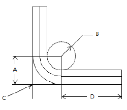
- A
- B
- C
- D
(정답률: 77%)
45. 가스트 락(Gust Lock)장치에 대한 설명으로 옳은 것은?
- 비행 중인 항공기의 조종면을 돌풍으로부터 파손되지 않게 고정시키는 장치이다.
- 내부 고정장치, 조종면 스누버, 외부 조종면 고정장치가 있다.
- 동력 조종장치 항공기는 유압실린더의 댐퍼 작용으로 가스트 락 장치가 반드시 필요하다.
- 가스트 락 장치는 지상에서 오작 하지 않도록 해야 한다.
(정답률: 52%)
46. 그림과 같이 길이 ℓ인 캔틸레버보의 자유단에 집중력 P가 작용하고 있다면 보의 최대굽힘모멘트는? (단, A는 보의 단면적, E는 탄성계수이다.)
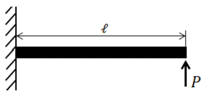
- Pℓ2 / 2AE
- Pℓ / AE
- P2ℓ / 2AE
- Pℓ
(정답률: 48%)
47. 완충효율이 우수하여 대형기의 착륙장치에 많이 사용되는 완충(Shock absorber)장치 형식은?
- 오레오(Oleo)식
- 공기압력(Air pressure)식
- 평판스프링(Plate spring)식
- 고무완충(Rubber absorber)식
(정답률: 88%)
48. 가스 중에 아크를 발생시키면 가스는 이온화 되어 원자 상태가 되고, 이때 다량의 열이 발생하는데 이 아크와 가스의 혼합물을 용접의 열원으로 이용하는 용접은?
- 플라스마 용접
- 금속 불활성가스 용접
- 산소아세틸렌 용접
- 텅스텐 불활성가스 용접
(정답률: 68%)
49. 다음 중 인성(Thoughness)에 대한 설명으로 옳은 것은?
- 재료에 온도를 서서히 증가하였을 때 조직 구조가 변형되는 현상이다.
- 재료의 시험편을 서서히 잡아 당겨서 파괴되었을 때 파단면의 조직이 변화된 현상이다.
- 취성(Brittleness)의 반대되는 성질로서 충격에 잘 견디는 성질을 말한다.
- 재료를 일정한 온도와 하중을 가한 상태에서 시간에 따라 변형률이 변화하는 현상이다.
(정답률: 74%)
50. 머리에 스크루 드라이버를 사용하도록 홈이 파여 있고 전단 하중만 걸리는 부분에 사용되며 조종계통의 장착핀 등으로 자주 사용되는 볼트는?
- 내부렌치볼트
- 아이볼트
- 육각머리볼트
- 클레비스볼트
(정답률: 85%)
51. 항공기의 고속화에 따라 기체재료가 알루미늄합금에서 티타늄합금으로 대체되고 있는데 티타늄합금과 비교한 알루미늄합금의 어떠한 단점 때문인가?
- 너무 무겁다.
- 전기저항이 너무 크다.
- 열에 강하지 못하다.
- 공기와의 마찰로 마모가 심하다.
(정답률: 87%)
52. 리벳 작업시 리벳 성형머리(Bucktail)의 높이를 리벳지름(D)으로 옳게 나타낸 것은?
- 0.5D
- 1D
- 1.5D
- 2D
(정답률: 59%)
53. 페일 세이프(Fail-safe) 구조 중 큰 부재 대신에 같은 모양의 작은 부재 2개 이상을 결합시켜 하나의 부재와 같은 강도를 가지게 함으로써 치명적인 파괴로부터 안전을 유지할 수 있는 구조형식은?
- 이중구조(Double Structure)
- 대치구조(Back-up Structure)
- 예비구조(Redundant Structure)
- 하중경감구조(Load Dropping Structure)
(정답률: 72%)
54. 세미모노코크(Semi-monocoque)형식의 동체구조에 대한 설명으로 옳은 것은?
- 구조재가 3각형을 이루는 기체의 뼈대가 하중을 담당하고 표피가 우포로 되어 있는 형식이다.
- 하중의 대부분을 표피가 담당하며, 금속이 각 껍질(Shell)로 되어 있는 형식이다.
- 스트링어(Stringer), 벌크헤드(Bulkhead), 프레임(Frame) 및 외피(Skin)로 구성되어 골격과 외피가 하중을 담당하는 형식이다.
- 트러스 재를 활용하여 강도를 보충하고 외피를 씌워 항력을 감소시킨 현대항공기의 대표적인 형식이다.
(정답률: 86%)
55. 길이 200cm의 강철봉이 인장력을 받아 0.4cm의 신장이 발생하였다면 이 봉의 인장 변형률은?
- 15 x 10-4
- 20 x 10-4
- 25 x 10-4
- 30 x 10-4
(정답률: 69%)
56. SAE 규격으로 표시한 합금강의 종류가 옳게 짝지어진 것은?
- 13XX : 망간강
- 23XX : 망간-크롬강
- 51XX : 니켈-크롬-몰리브덴강
- 61XX : 니켈-몰리브덴강
(정답률: 68%)
57. 다음 중 이질 금속간 부식이 가장 잘 일어날 수 있는 조합은?
- 납 - 철
- 구리 - 알루미늄
- 구리 - 니켈
- 크롬 - 스테인리스강
(정답률: 68%)
58. 항공기의 무게를 측정한 결과 그림과 같다면 이 때 중심위치는 MAC의 몇 %에 있는가? (단, 단위는 cm이다.)
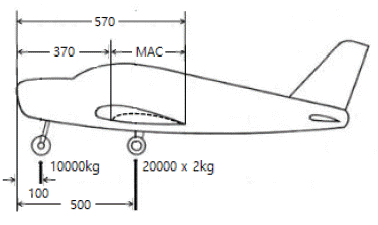
- 20
- 25
- 30
- 35
(정답률: 70%)
59. 항공기 조종계통에 대한 설명으로 옳은 것은?
- 케이블을 왕복으로 설치하는 것은 피해야 한다.
- 케이블 장력이 커지면 풀리에 큰 반력이 생기고 마찰력이 커져 조종성이 떨어진다.
- 케이블 풀리 간격이 조작하는 거리보다 짧아지는 것이 조종성 안정에 좋다.
- 케이블 로드(Rod)보다 작은 공간을 필요로 하므로 현대 항공기에서 많이 사용된다.
(정답률: 64%)
60. 그림과 같이 반대방향으로 하중이 작용하는 구조물에서 B-C구간의 내력은 몇 N인가?
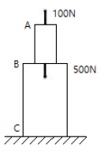
- 100
- -100
- 400
- -400
(정답률: 63%)
4과목: 항공장비
61. 지상의 항행원조시설 없이 항공기의 대지속도, 편류각, 비행거리를 직접적이고 연속적으로 구하여 장거리를 항행 할 수 있게 하는 자립항법장치는?
- 오메가항법
- 도플러레이더
- 전파고도계
- 관성항법장치
(정답률: 43%)
62. 납산 축전지(Lead acid battery)에서 사용되는 전해액은?
- 수산화칼륨 용액
- 불산 용액
- 수산화나트륨 용액
- 묽은 황산 용액
(정답률: 68%)
63. 광전 연기 탐지기(Photo electric smoke detector)에 대한 설명으로 틀린 것은?
- 연기 탐지기 내부는 빛의 반사가 없도록 무광 흑색 페인트로 칠해져 있다.
- 연기 탐지기내의 광전기 셀에서 연기를 감지하여 경고 장치를 작동시킨다.
- 연기 탐지기 내부로 들어오는 연기는 항공기 내외의 기압차에 의한다.
- 광전기 셀은 정해진 온도에서 작동될 수 있도록 가스로 채워져 있다.
(정답률: 54%)
64. 직류 발전기에서 정류작용을 일으키는 요소는?
- 계자권선
- 전기자 권선
- 계자철심
- 브러시와 정류자
(정답률: 76%)
65. 항공기 비상사태 시 승객을 보호하고 탈출 및 구출을 돕기 위한 비상 장비가 아닌 것은?
- 소화기
- 휴대용 버너
- 구명보트
- 비상 신호용 장비
(정답률: 88%)
66. 그림과 같은 회로에서 B와 C단자 사이가 단선되었다면 저항계(Ohm-meter)에 측정된 저항값은 몇 Ω인가?
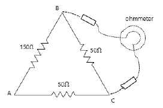
- 0
- 50
- 150
- 200
(정답률: 64%)
67. 지자기의 요소 중 지자기 자력선의 방향과 수평선 간의 각을 의미하는 요소는?
- 복각
- 수직분력
- 편각
- 수평분력
(정답률: 62%)
68. 항공기의 연료 탱크에 150lb의 연료가 있고 유량계기의 지시가 75PPH로 일정하다면 연료가 모두 소비되는 시간은?
- 30분
- 1시간 30분
- 2시간
- 2시간 30분
(정답률: 81%)
69. 정전기방전장치(Static discharger)에 대한 설명으로 틀린 것은?
- 무선 수신기의 간섭 현상을 줄여주기 위해 동체 끝에 장착한다.
- 비닐이 씌워진 방전장치는 비닐 커버에서 1inch 나와 있어야 한다.
- Null-field 방전장치의 저항은 0.1Ω을 초과해서는 안된다.
- 항공기에 충전된 정전기가 코로나 방전을 일으킴으로서 무선통신기에 잡음방해를 발생시킨다.
(정답률: 46%)
70. 다음 중 계기 착륙 장치(ILS)와 관계가 없는 것은?
- 로칼라이저(Localizer)
- 전 방향 표시 장치(VOR)
- 마커 비컨(Maker Beacon)
- 글라이드 슬로프(Glide Slope)
(정답률: 83%)
71. 다음 중 유압계통의 장점이 아닌 것은?(오류 신고가 접수된 문제입니다. 반드시 정답과 해설을 확인하시기 바랍니다.)
- 원격조정이 용이하다.
- 과부하에 대해서도 안전성이 높다.
- 장치상 구조는 복잡하나 신뢰성이 크다.
- 운동속도의 조절 범위가 크고 무단변속을 할 수 있다.
(정답률: 57%)
72. 다음 중 피토압에 영향을 받지 않는 계기는?
- 속도계
- 고도계
- 승강계
- 선회 경사계
(정답률: 85%)
73. 제빙부츠를 취급할 때에 주의해야 할 사항으로 틀린 것은?
- 부츠 위에서 연료 호스(Hose)를 끌지 않는다.
- 부츠 위에 공구나 정비에 필요한 공구를 놓지 않는다.
- 부츠를 저장하는 경우 그리스나 오일로 깨끗하게 닦은 다음 기름 종이로 덮어둔다.
- 부츠에 흠집이나 열화가 확인되면 가능한 빨리 수리하거나 표면을 다시 코팅한다.
(정답률: 81%)
74. 단거리 전파 고도계(LRRA)에 대한 설명으로 옳은 것은?
- 기압 고도계이다.
- 고고도 측정에 사용된다.
- 평균 해수면 고도를 지시한다.
- 전파 고도계로 항공기가 착륙할 때 사용된다.
(정답률: 67%)
75. 모든 부품을 항공기 구조에 전기적으로 연결하는 방법으로 고전압 정전기의 방전을 도와 스파크 현상을 방지시키는 역할을 하는 것은?
- 접지(Earth)
- 본딩(Bonding)
- 공전(Static)
- 절제(Temperance)
(정답률: 77%)
76. 항공기의 기압식 고도계를 QNE 방식에 맞춘다면 어떤 고도를 지시하는가?
- 기압고도
- 진고도
- 절대고도
- 밀도고도
(정답률: 59%)
77. 객실 여압계통에서 대기압이 객실안의 기압보다 높은 경우 객실로 자유롭게 들어오도록 사용하는 장치로 진공 밸브라고도 하는 것은?
- 부압 릴리프 밸브
- 객실 하강율 조절기
- 압축비 한계 스위치
- 슈퍼차져 오버스피드 밸브
(정답률: 85%)
78. 유압계통에서 장치의 작용과 펌프의 가압에서 발생하는 압력 서지(Surge)를 완화시키는 것은?
- 축압기(Accumulator)
- 체크 밸브(Check valve)
- 압력 조절기(Pressure regulator)
- 압력 릴리프 밸브(Pressure relief valve)
(정답률: 77%)
79. 자동 방향 탐지기(ADF)의 구성 요소가 아닌 것은?
- 전파 자방위 지시계(RMI)
- 무지향성 표시 시설(NDB)
- 자이로 컴파스(Gyro Compass)
- 루프(Loop), 감도(Sense) 안테나
(정답률: 58%)
80. 압력센서의 전압값을 기준전압 5V의 10bit 분해능의 A/D컨버터로 변환하려 한다면 센서의 출력 전압이 2.5V일 때 출력되는 이상적인 디지털 값은?
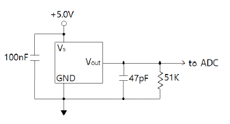
- 128
- 256
- 512
- 1024
(정답률: 60%)
턱 언더는 고속 비행 시 기체의 앞부분이 갑자기 내려가는 현상으로, 이로 인해 기체의 고도와 공기 역학적 안정성이 감소합니다. 이는 주로 고속 비행 시 발생하며, 마하 트리머를 사용하여 수정할 수 있습니다.
더치롤은 기체의 좌우 비행 시 좌우 날개의 상승과 하강이 불균형하게 일어나는 현상입니다. 나선 불안정은 좌우 비행 시 기체가 나선 모양으로 회전하며 안정성을 잃는 현상입니다. 방향 불안정은 좌우 비행 시 기체의 방향 안정성이 감소하는 현상입니다.